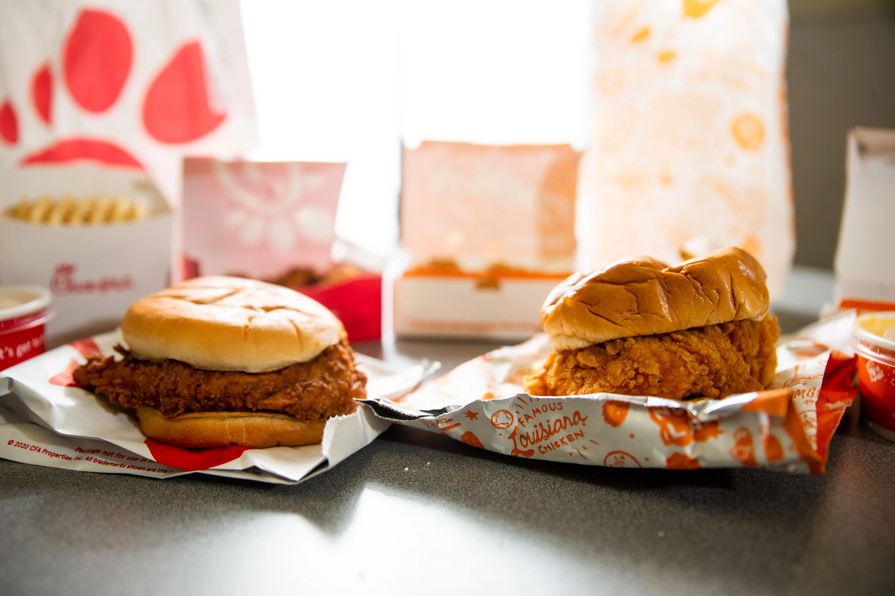
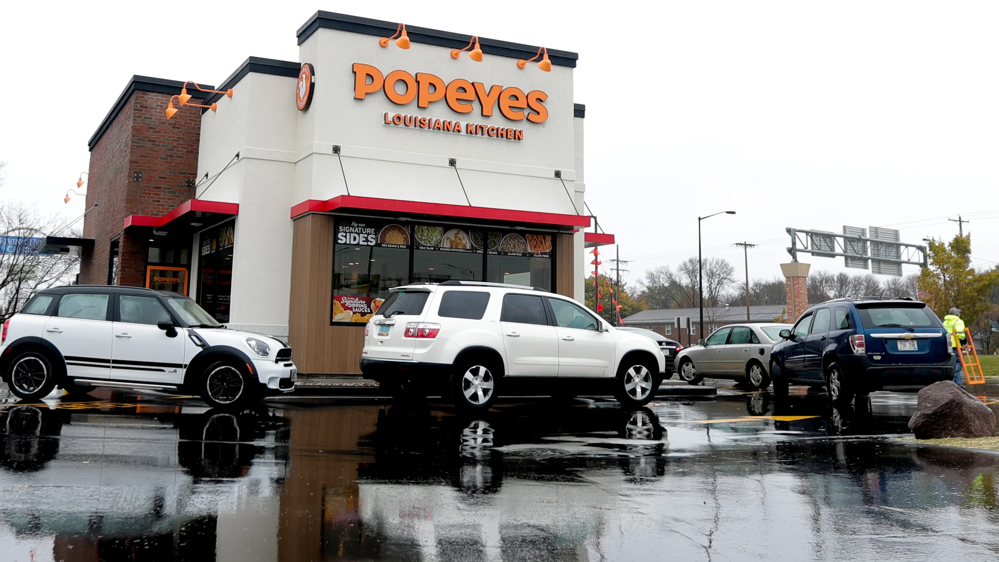
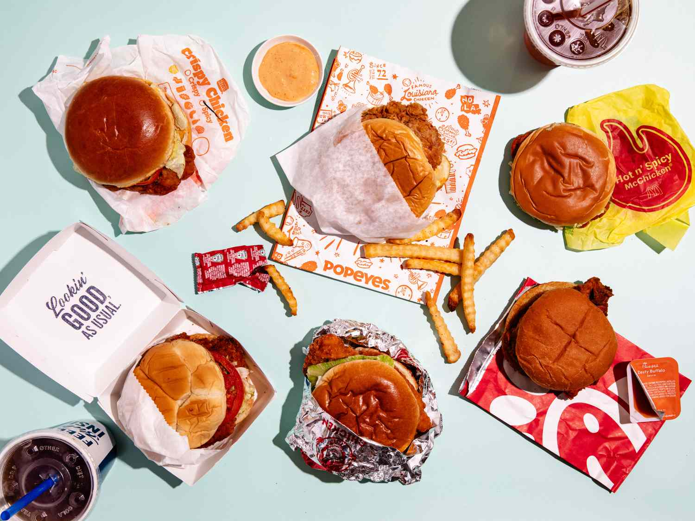
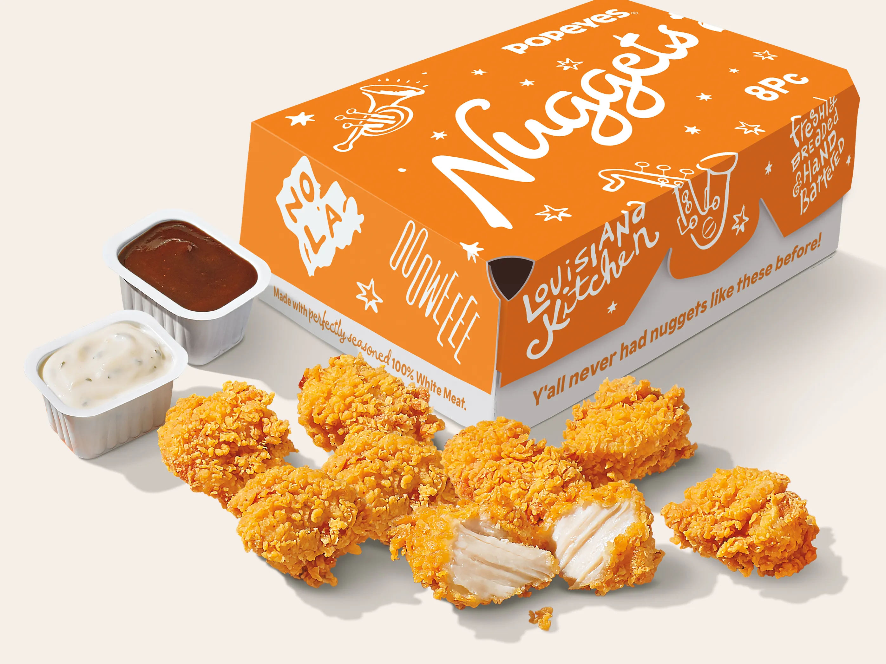

Sandwich War Begins:
This battle was kicked of in 2019 with the first competitor Popeyes who launched it's first ever chicken sandwich to the menu. Prior to this, Chick-fil-A had long held the crown as the undisputed chicken sandwich champion, making the newcomer’s arrival a direct challenge. In response to the hype surrounding the launch, Chick-fil-A took to social media to remind the world of their legacy, tweeting, "Bun + Chicken + Pickles = all the ❤️ for the original." However, Popeyes didn’t stay silent for long. They replied with a simple tweet: "…y'all good?" This witty comeback ignited a viral social media battle that captivated millions, sparking debates about which sandwich reigned supreme.
By the end of the week following Popeyes’ sandwich launch, customers were lining up outside Popeyes locations across the country, eager to taste the contender for themselves. The surge in demand was unprecedented, with many restaurants running out of chicken sandwiches for days on end. The craze resulted in Popeyes' U.S. sales skyrocketing by a remarkable 38%. What was once a domain ruled by Chick-fil-A had quickly turned into a nationwide sensation that no one could ignore.
The overwhelming success of Popeyes' sandwich sparked a ripple effect across the fast-food industry. Competitors scrambled to introduce their own versions of the now iconic chicken sandwich. Brands like McDonald’s, KFC, and Wendy’s responded by tweaking their menus to join the competition. By 2021, more than 20 fast-food chains across the U.S. had introduced or revamped their chicken sandwiches, each trying to claim their share of the booming market.
In 2021, after nearly two years of back-and-forth between the major players, Popeyes took a light-hearted approach and called for a truce. They introduced their "We Come in Piece" campaign, featuring an 8-piece chicken nugget option that was meant to calm the intense rivalry. The once-heated sandwich wars began to cool down as fast-food giants shifted their focus to new product innovations, and the public’s attention shifted elsewhere. Though the wars may have ended, the impact of Popeyes' sandwich is still felt across the industry today.
